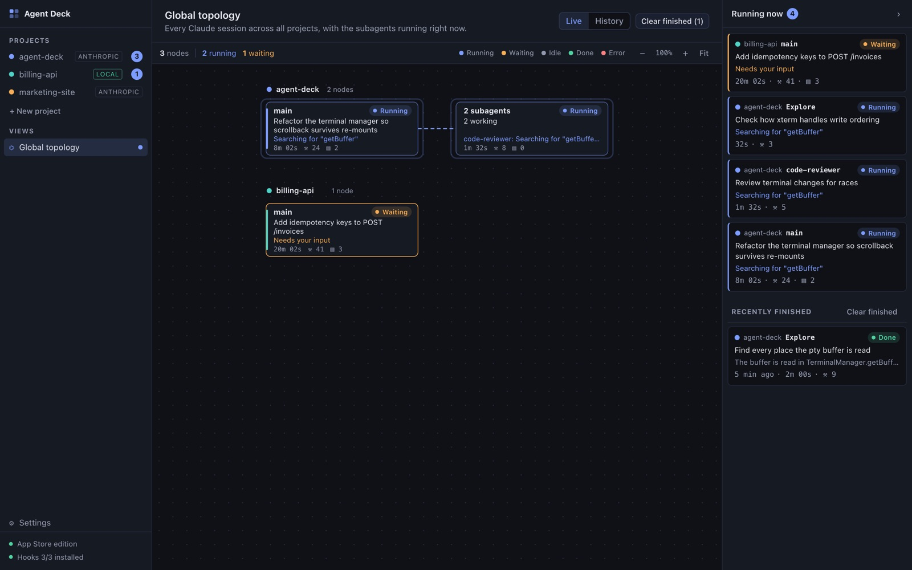
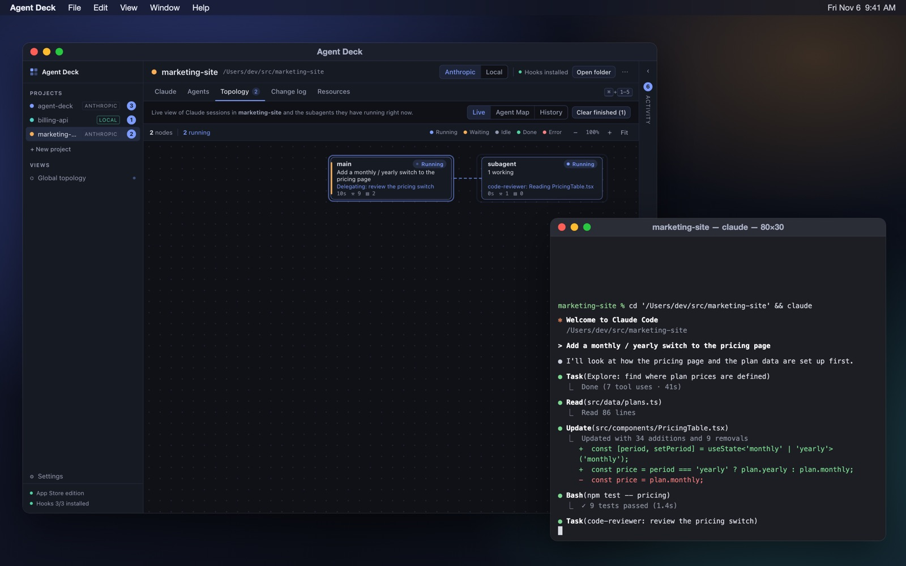
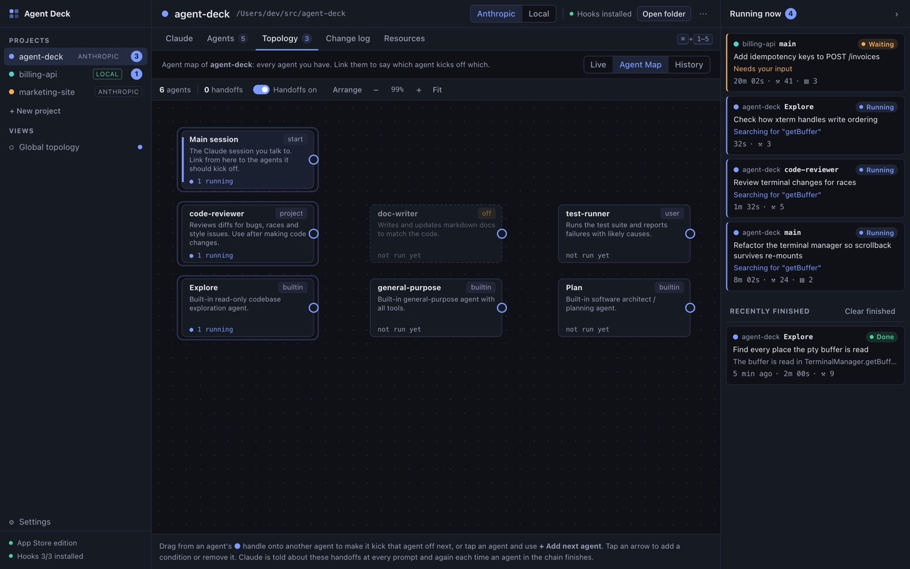
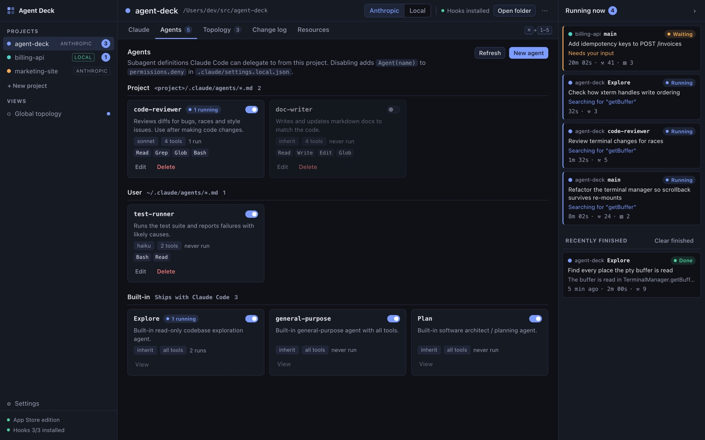
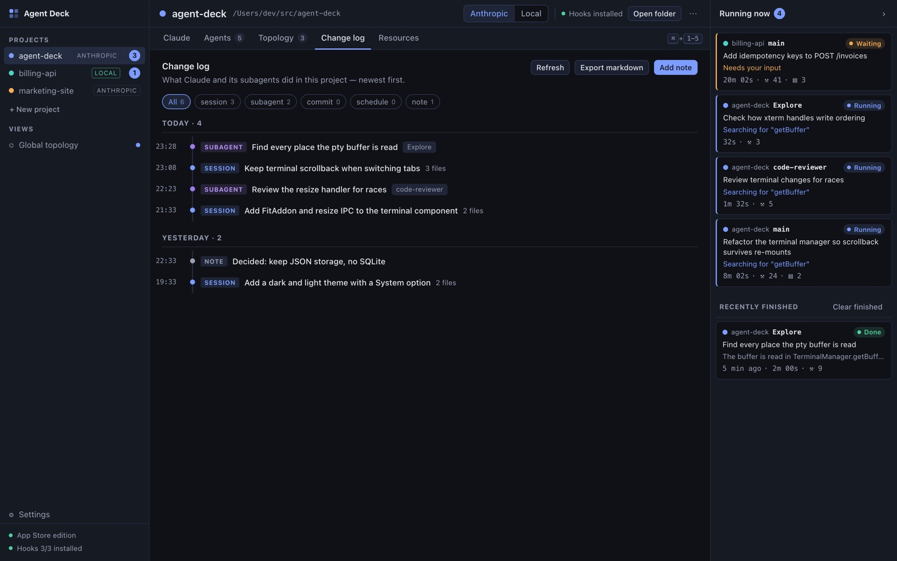

Agent Deck is mission control for Claude Code. See what Claude and its subagents are doing in every project, live, and start, organize and review your work from one place.
See every agent, liveSessions and subagents appear the moment they start.Start Claude in one clickClaude works in Terminal while Agent Deck follows along.Organize and reviewAgents, the change log, resources and local models.
Everything Claude is doing, in one place
Agent Deck follows Claude Code through its hooks, so you see real activity, not guesses.
Live topology
Watch every session and subagent
Every Claude session across all your projects, with the subagents each one is running right now.
A Running now panel shows what each one is doing, and which sessions are waiting for you.
History connects every agent a session launched, including finished ones.

Start Claude
One click to start working
Start Claude in your project folder with the project's model, effort and mode.
Start as a specific agent, with a prompt, or resume an earlier session.
On the Mac, Claude runs in Terminal. On Windows, it runs in terminals inside Agent Deck.

Agent Map
Link agents into handoffs
Draw which agent kicks off which, and Claude is told about the handoffs.
See your project, personal and built-in agents side by side.

Agents
Organize your agents
Switch any agent on or off per project.
Create and edit agents in the app.

Change log
Keep a record of what got done
What Claude and its subagents did in each project, newest first, with the files they touched.
Add your own notes and decisions, and export the log as Markdown.

And more
Universal instructions
Rules you write once that every session reads first, in every project.
Local mode
Run Claude Code against an open-weight model on your computer through Ollama, at no token cost.
Resources
Drop in files for Claude to read, and add extra folders for new sessions.
Notifications
Know when Claude finishes or needs your input.
Schedules (Windows)
Run Claude on a schedule, like a nightly test triage, with every run's output kept.
Private by design
No account, no analytics. Your data stays on your computer. Privacy policy
Requires Claude Code (installed separately from claude.com/claude-code) and a Claude account. Local mode requires Ollama.